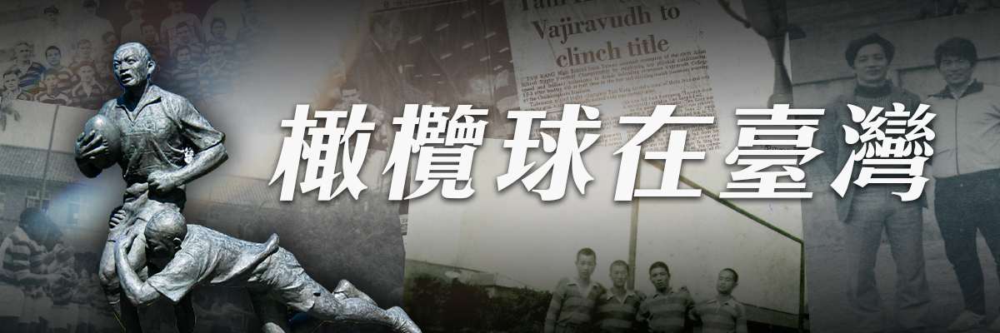
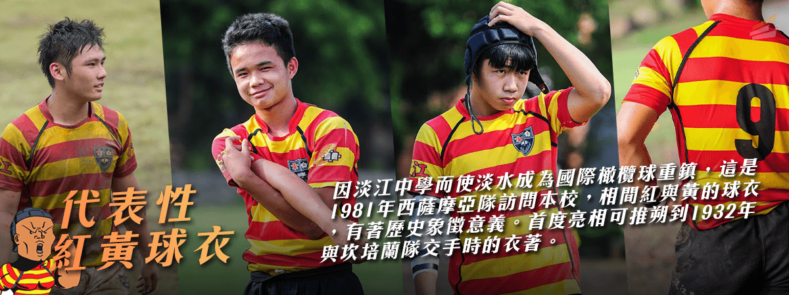

橄欖球在臺灣

橄欖球在臺灣從來不是一項熱門的運動，臺灣的橄欖球運動肇始於 1913 年，由日本人松岡正男在大正二年(民國二年)時，任職於臺灣總督府，之後在臺北一中指導橄欖球。所引進，歷經不同階段的發展，1923 年由「臺灣橄欖球之父」陳清忠先生積極推廣，中間經歷了十年的空窗，到光復後各界的橄欖球運動如雨後春筍開展，1970、80 年代，更在政府的政策下，與電視臺媒體合作，如歷任臺視總經理兼任橄協理事長，期間長達 26 年之久，在黨國媒體一家的環境下，橄協主辦了泛太平洋青年橄欖球賽，1988 年還有英國劍橋的橄欖球隊來訪，風光一時，可惜缺乏後續的資源挹注，相較於國球——「棒球」，能得到的支持相對缺乏。
而淡江的橄欖球運動，至今仍仰賴著無數熱愛橄欖球的先輩扶持，才有今日的成果。在專題研究的過程中，於歷史資料的爬梳之外，也發現不少關於淡江橄欖球隊發展的優勢與困境。身為淡江的一份子，除了發掘問題，更希望作為橄欖球發源地之一的淡江，能夠將橄欖球精神延續，並且傳承下去。於此將針對淡江橄欖球隊發展的優勢、發展困境與問題作分析，以茲參考，盼能在傳承美好之餘，更能開拓新境。
